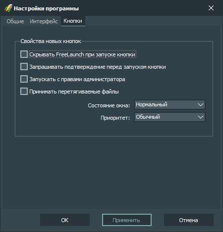

Настройки новых кнопок:
-
Скрывать FreeLaunch при запуске кнопки
Скрывать главное окно приложения после запуска кнопки.
-
Запрашивать подтверждение перед запуском кнопки
Запрашивать у пользователя подтверждение на запуск кнопки.
-
Запускать с правами Администратора
Запускать объект кнопки с правами Администратора.
-
Принимать перетягиваемые файлы
Заставить объект, привязанный к кнопке, принимать перетягиваемые на кнопку файлы.
-
Состояние окна
Устанавливает состояние окна запускаемого объекта.
-
Приоритет
Устанавливает приоритет запускаемого объекта.